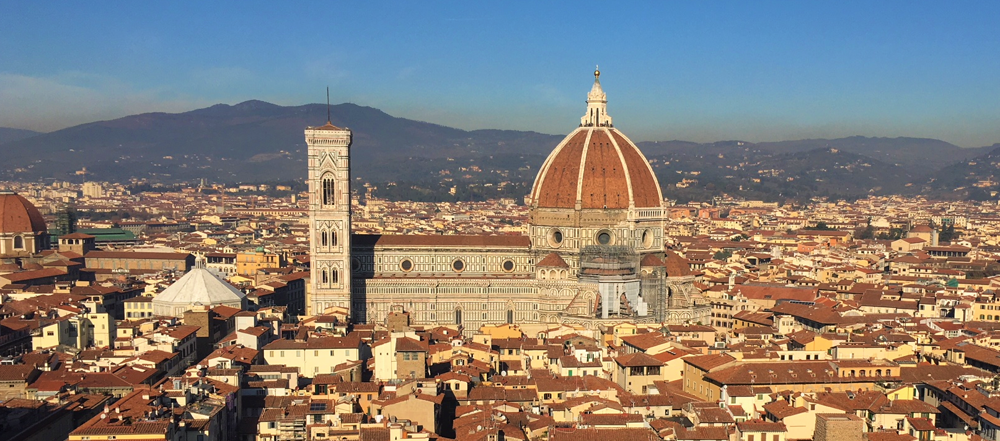

Florence
Florence, Italy - December 13, 2017
The second part of my trip to Italy was Florence. We got breakfast at a little cafe next to the train station (it was a constant struggle battling the pigeons who kept trying to eat our food). The train left at 9am and we arrived in Florence by 11am. Florence was much easier to navigate than Venice, it had a very similar vibe to Edinburgh with the buildings and streets. We dropped our stuff at the hostel and got lunch at a pizzeria next to the Duomo (my second of 3 pizzas on the trip...). This was probably my favorite of the 3 pizzas because it had super fluffy crust and there wasn't too much cheese or sauce. I finished the entire pizza and it was delicious. :)
Today was in general a really good day. After a few photos of the Duomo (which was a good idea because Wednesday morning was cloudy), we went down the street to the Palazzo Vecchio. The Palazzo Vecchio is the town hall of Florence, Italy. It has a copy of Michelangelo's David statue in front of the entrance. We needed to get tickets to climb the tower (where there was apparently a really good view of the Duomo) and visit the museum. Pi, who is Thai, made friends with the Thai lady who was in the ticket office. She gave us free tickets to both the tower and museum, which was awesome. The tower was definitely a climb but the view was totally worth it. The museum was interesting too. We visited the Apartments of the Elements, Pope Leo X's apartments, and various rooms that housed Cosimo I de' Medici, the first Medici who ruled Florence.
The building beside the Palazzo Vecchio was the Uffizi Gallery, which we visited next. Sadly we didn't get in for free, but the price was definitely worth what we got to see. There was no line to buy tickets or get in, which was super lucky for us. In the summer the lines to get in can be hours long. It was a massive museum that housed mostly Middle Age and Renaissance art.
My favorite pieces from the museum were Botticelli's Birth of Venus and La Primavera. I remembered learning about those two pieces in AP Euro and it was incredible to see them in person. I also enjoyed seeing pieces by Michelangelo, da Vinci, Titian, Raphael, Caravaggio, and Bronzino. We were in Uffizi for a solid 2 hours and we were tired of looking at art, after also looking at artwork in the Palazzo Vecchio. As a break, we found a gelato shop and ate a small bowl of gelato outside (usually I would go for something chocolatey but I was craving something fruity so I went for strawberry). It was the perfect late-afternoon snack before heading to Ponte Vecchio.
Ponte Vecchio is a bridge with artisan shops lining the sides, mostly jewelry and watch shops. Although most of the items in the shops were very expensive, I was able to get a nice necklace with the outline of Italy stamped into the metal pendant. The old man who sold me the necklace was so nice - he polished the pendant and helped me pick a suitable chain. After a few photos on the bridge, we made our way back to the center of Florence. Florence, unlike Venice, had almost exclusively very posh, well-known clothing stores. I got a few souvenirs but avoided the fancy stores because I only had a backpack to bring back to Edinburgh with me. We had dinner at a hotel restaurant close to our hostel. I got my third pizza on the trip, which was my limit. We went to bed decently early but the room we were in was freezing, and the bed only had a thin blanket on it so we were literally shivering all night. I wore a sweatshirt and leggings and socks and was still quite cold. Wasn't a very good sleep, but we didn't have much planned for Wednesday so it was okay.
Wednesday morning we got up early and got breakfast at a nearby cafe before heading to the Duomo to try and get tickets to climb the dome. When we found the ticket office, the tickets to climb the dome had sold out for the next 3 days! Even if we had tried on Tuesday, they would have still been sold out. After that denial, we went to the market and found the fluffiest scarves ever. The scarves were 50% lambs wool and 50% cashmere and made in Florence. We got a second breakfast at another cafe on the way back to the Duomo, before the cathedral opened at 10am. We waited in line for about 30 minutes before getting into the cathedral. It was surprisingly plain inside, but we got a partial glimpse of the dome, which was covered in frescos depicting Heaven and Hell. Deciding that we didn't have much else to do that morning, we headed to the airport early and relaxed in the airport until our flight in the mid-afternoon.
I really enjoyed the trip to Italy, and even though it was chillier than I expected, it was nice to get in one last trip before finals.
Cheers!
- Caileigh Marshall